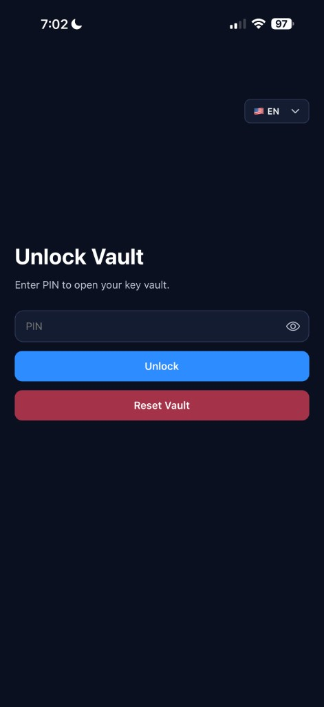
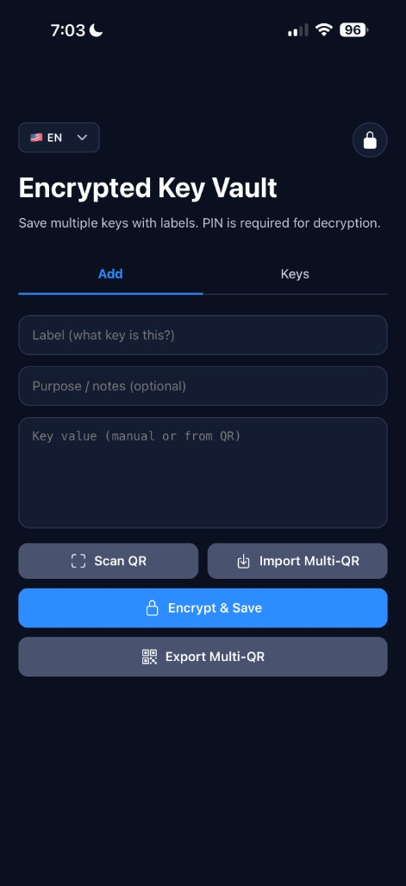
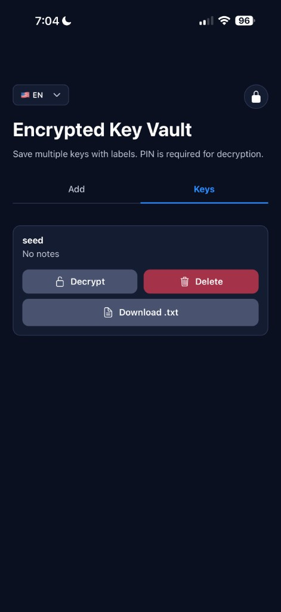

Afina Vault is a local, offline vault for storing backup keys and sensitive secrets on your device.
Reset Vault to wipe all local data when needed.Encrypt & Save to store encrypted entries..txt.
Unlock screen: PIN field, Unlock, and Reset Vault.

Add screen: Scan QR, Import Multi-QR, Encrypt & Save, Export Multi-QR.

Keys screen: Decrypt, Delete, and Download .txt.
Afina Vault stores encrypted data locally on your device. The app is designed for offline use and does not require account sign-in.
Afina Vault — локальне офлайн-сховище для резервних ключів і секретів на вашому пристрої.
Reset Vault видаляє всі локальні дані.Encrypt & Save зберігає запис у зашифрованому вигляді..txt.Екран входу: поле PIN, кнопка Unlock, кнопка Reset Vault.
Екран додавання: Scan QR, Import Multi-QR, Encrypt & Save, Export Multi-QR.
Екран ключів: розшифрування, видалення і завантаження .txt.
Afina Vault зберігає дані локально у зашифрованому вигляді. Застосунок не потребує входу в акаунт.
Afina Vault — локальное офлайн-хранилище для резервных ключей и секретов на устройстве.
Reset Vault удаляет все локальные данные.Encrypt & Save сохраняет запись в зашифрованном виде..txt.Экран входа: поле PIN, кнопка Unlock, кнопка Reset Vault.
Экран добавления: Scan QR, Import Multi-QR, Encrypt & Save, Export Multi-QR.
Экран ключей: расшифровка, удаление и скачивание .txt.
Afina Vault хранит данные локально в зашифрованном виде. Приложение не требует входа в аккаунт.
Updated: 2026-03-03